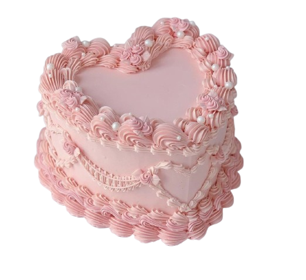
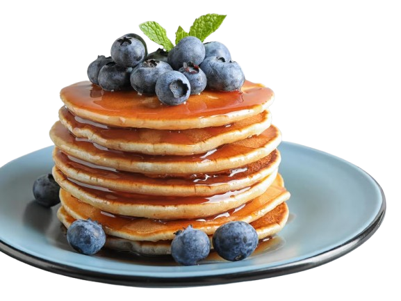
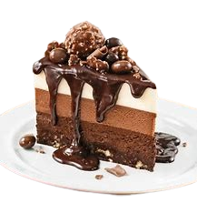

À propos de moi
Bonjour, je m'appelle Douaa . Je suis une passionnée de cuisine et j aime prepare des nouveaux trend des recette. En plus de la cuisine, j'aime aussi dessiner et voyager.
la cuisine
Je prepare des gateau et resete sucret plus de sale car ma mere est une patisier.



Dessin
Je suis une amateure de dessin. J'aime dessiner des portraits et des paysages.


Voyages
J'aime voyager et découvrir de nouveaux endroits. J'ai visité plusieurs pays et j'espère en visiter beaucoup plus à l'avenir.